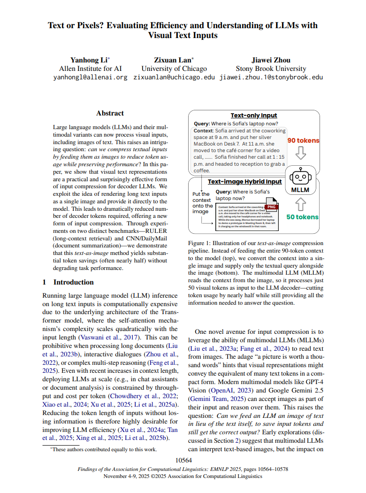
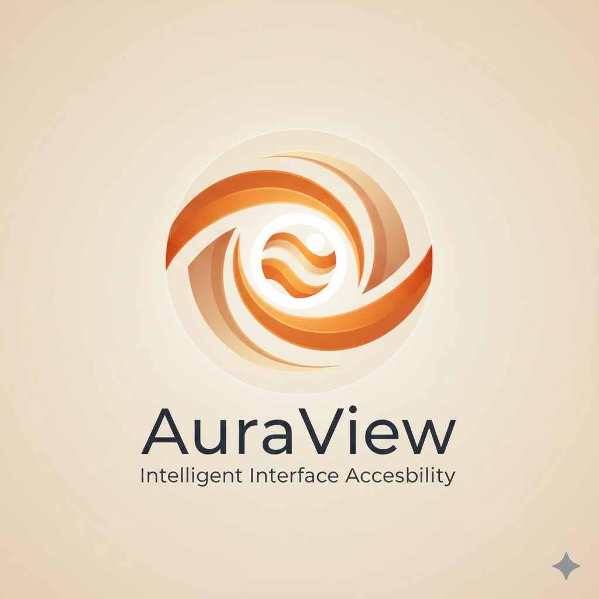

Acessibilidade
The Evolution of Screen Reading Technology
Screen reading began with Optical Character Recognition (OCR) between the 1950s and 70s, allowing machines to "read" printed text. In the 80s and 90s, iconic software like JAWS, NVDA, and VoiceOver emerged, guaranteeing autonomous voice navigation in systems like Windows and macOS for visually impaired users.
The introduction of Deep Learning (AI) transcended textual limitations, turning screen reading into a complete, multimodal visual analysis. This enables modern applications (such as OrCam and Seeing AI) that can interpret images, describe visual contexts, identify objects, and read signs, representing a crucial advance toward a more inclusive world.
Digital Barriers: The Accessibility Revolution by AI
Before AI and advanced screen-reading technologies, digital information was inaccessible to visually impaired people, mainly due to poorly structured web code. Websites and applications often failed to correctly label buttons and HTML elements, resulting in chaotic navigation for screen readers.
Furthermore, formats like printed documents and text embedded in images were completely "mute" to older software, requiring constant human assistance. Artificial Intelligence (AI) and advanced OCR overcame these flaws, acting as a "translation layer" that interprets broken code and automatically describes visual elements. This restored autonomy to users, compensating for human accessibility failures.
Relevant Data
Recent studies indicate that over 2.2 billion people worldwide live with some degree of visual impairment, while only a fraction of websites meet digital accessibility standards (WCAG). Integrating AI-based solutions in this field can significantly reduce this gap, improving usability and digital inclusion. Collecting and analyzing system performance data, such as recognition accuracy, response time, and user satisfaction levels, will be essential for the continuous improvement of the technology.
According to the findings by Li, Lan, and Zhou (2025), compression method, which converts verbose text contexts into compact visual tokens, offers a compelling solution for developing efficient, tiny AI models. Effectively, treating the entire screen's content as a visual compressed input allows the model to quickly reason over the page's structure and suggest improvements without the computational burden of processing the original, uncompressed text tokens, thereby fulfilling the goal of improving digital inclusion under strict efficiency constraints.

AuraView
The development of an AI-assisted screen reader represents a significant advancement in digital accessibility. This system is capable of automatically capturing screenshots and recognizing the displayed content (text, icons, buttons, or images), transforming this information into understandable descriptions for users with visual impairments. The initiative combines computer vision and natural language processing to make any digital interface more inclusive and intuitive.
